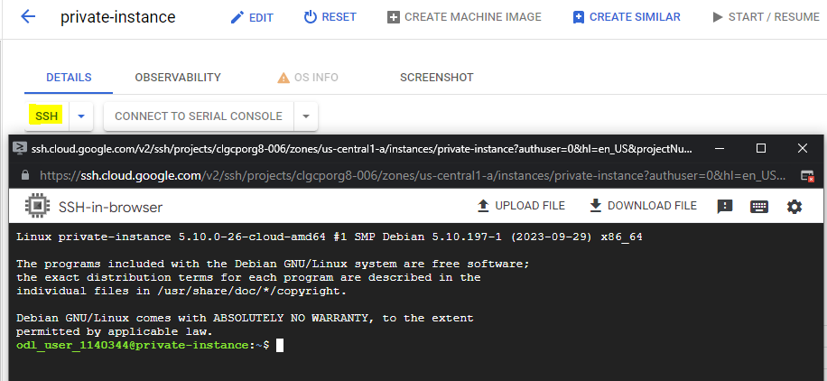
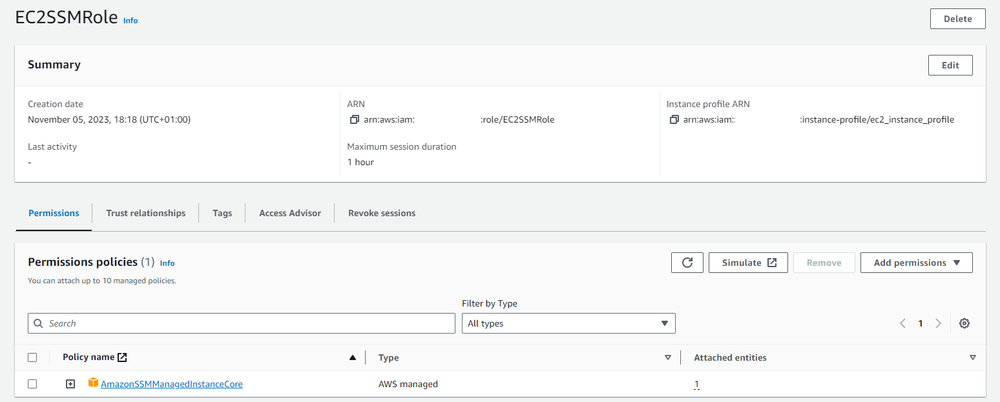
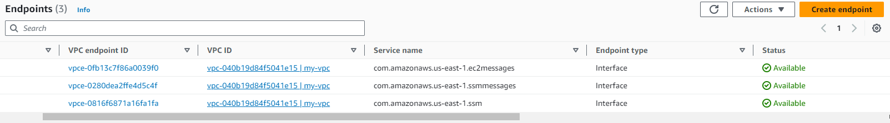
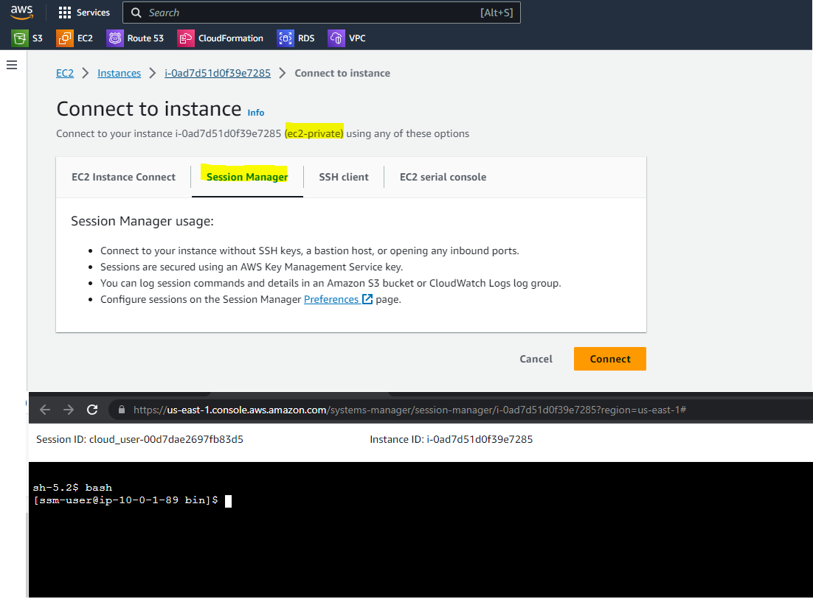
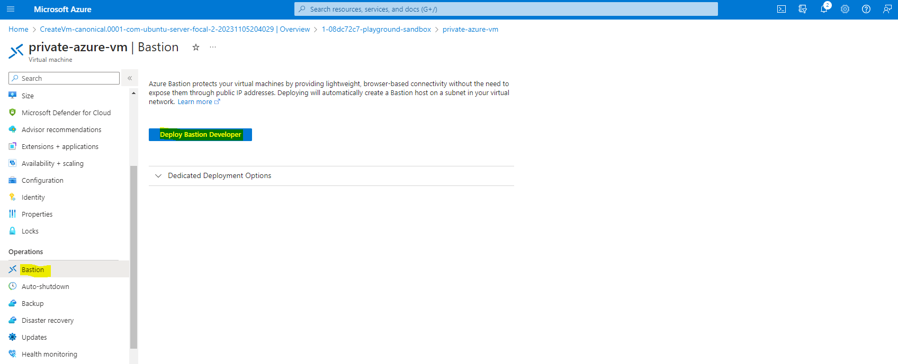
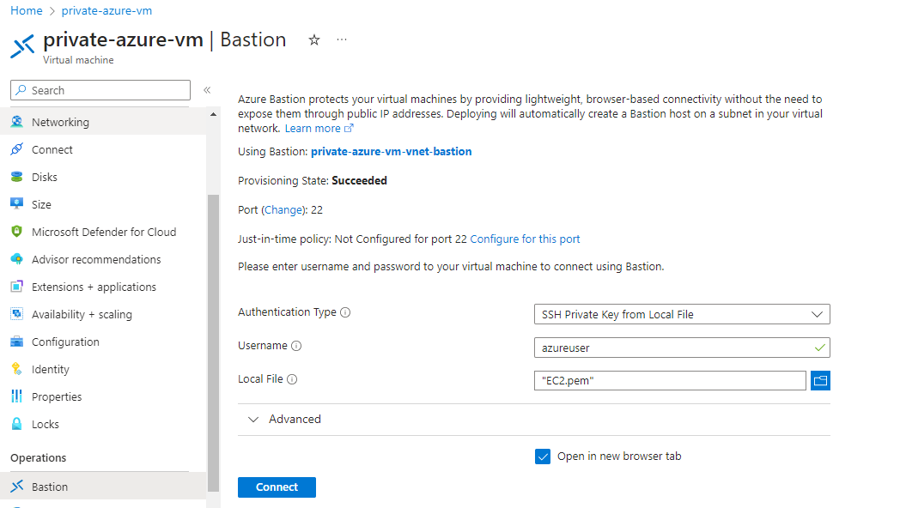
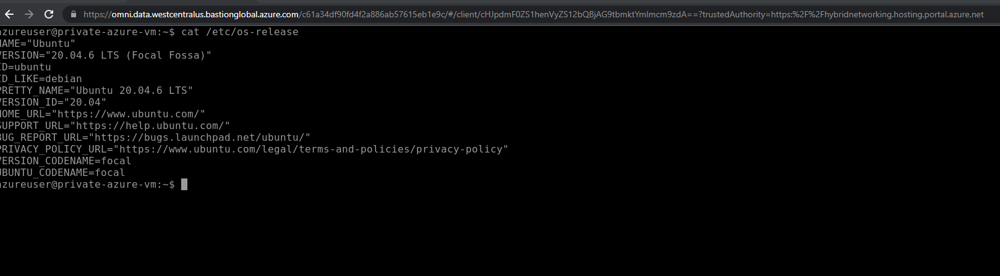

In this article, we will explore the process of establishing a connection to a virtual machine situated within a private subnet without a public IP address. This method significantly enhances security by eliminating the need to expose the virtual machine to the open Internet.

Google Cloud Platform
Google Cloud offers a feature known as Identity-Aware Proxy or IAP which enable us to access Compute Engine instances without the need for public IP address.
Architecture

Steps
- Create a private compute engine
gcloud compute instances create private-instance \
--network=NETWORK_NAME \
--subnet=SUBNET_NAME \
--zone=ZONE_NAME \
--no-address
- Give the necessary permissions to the user in order to use IAP
- IAP-Secured Tunnel User (roles/iap.tunnelResourceAccessor)
- Ensure that VPC’s firewall accepting IAP connection from the IP range 35.235.240.0/20
gcloud compute firewall-rules create allow-ssh-ingress-from-iap \
--network=NETWORK_NAME \
--direction=INGRESS \
--action=allow \
--rules=tcp:22 \
--source-ranges=35.235.240.0/20
- Connect to private compute engine through IAP 
Amazon Web Services
Session Manager, a feature of AWS Systems Manager (SSM), provides a secure and convenient way to access EC2 instances without relying on a public IP address.
Architecture
Steps
- Create an EC2 instance in a private subnet with an instance profile allowing to use SSM 
- Create 3 interfaces endpoints in the VPC
- com.amazonaws.REGION.ssm
- com.amazonaws.REGION.ssmmessages
- com.amazonaws.REGION.ec2messages 
- Ensure that the security group attached to EC2 instance accepting the traffic on port 443 within the VPC
- Connect to private EC2 through Session Manager 
Azure
Azure Bastion is a service offered by Microsft Azure that provides secure and streamlined remote access to virtual machines within an Azure Virtual Network. It eliminates the need for a public IP address or a VPN connection to access the virtual machines.
Architecture

Steps
- Create a private vm without public IP
- Configure Azure Bastion
- Azure Bastion will be deployed into a dedicated subnet called “AzureBastionSubnet”
- The pricing is available here
- A new SKU (Azure Bastion Developer) is recently released. This SKU is ideal for Dev/Test (lightweight, lower-cost). 
- Connect to private vm through Azure Bastion
- From Azure Portal, choose the suitable authentication method and then click the Connect button 
- Private Virtual Machine is connected through Azure Bastion. No public IP or inbound rule is required 